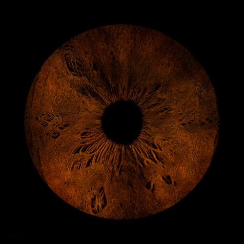

Win Sivers
Hi, I am Win Sivers. I am a 14 year old boy living in New Zealand. This website will be about things I have created, such as philosophical ideas, sewing, etc.

This is what I have made so far.
Favorite Hobbies:
- Sewing
- Writing
- Woodwork
- Philosophy
- Cycling
I currently go to a school in Wellington. It is very fun, I have many very kind friends and feel very at home there. But also very want to travel the world and move new places as soon as possible.